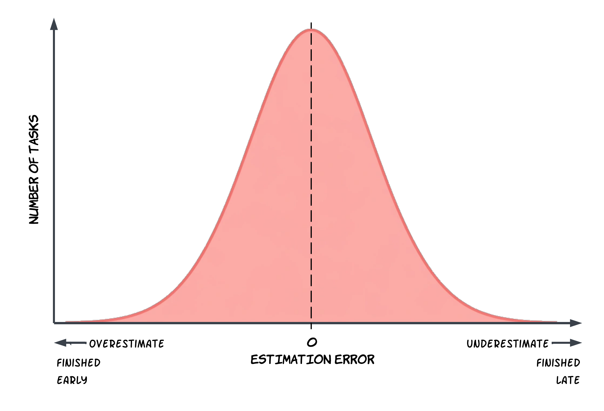
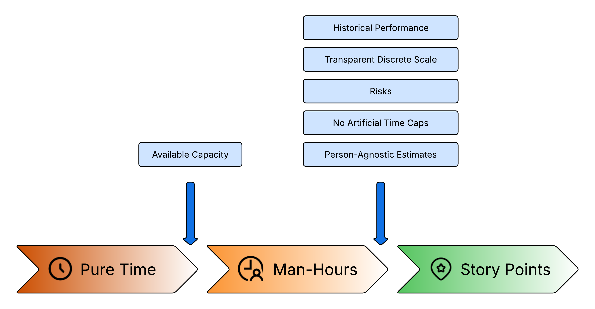
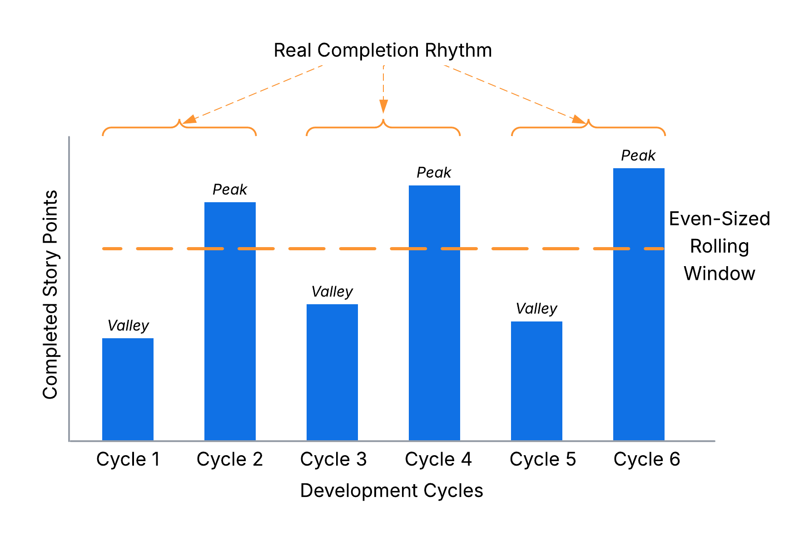

Fix Your Planning and Stop Missing Deadlines: Why Story Points Win
If your plans keep falling apart, it’s not an execution problem - it’s an estimation one. Turn the guessing game into a reliable tool: learn why hours fail and how to make Story Points work.
Missed deadlines, awkward excuses, and constant replanning have been haunting your team for months or even years. You might have already decided that this is just the way software development works, and there is nothing you can do about it.
But it doesn’t have to be this way. Predictable delivery is achievable, and team seniority is often not the deciding factor. If your plans collapse every week, you don’t have an execution problem - you have an estimation problem.
In this article, I show how to make the estimation process work for short-term planning: why overestimation destroys predictability, how to forecast delivery using velocity, when and why story points tend to outperform time-based estimates, and how to make them actually work. Whether you are an engineering manager or a developer looking to bring more predictability to your work, the approaches and recommendations below can help you turn estimation from a guessing game into one of the most effective tools in your planning process.
Why Care About Estimates?
Software projects almost always come with deadlines. Whether it's satisfying user needs, meeting customer expectations, or hitting a market window - delivering late can render the entire effort meaningless. The ultimate goal is typically a release on an agreed date, which means we need predictability for developers and for the business alike. For managers, predictability often matters even more than speed: it's not about how fast you deliver, but how closely your forecast matches reality.
Beyond business goals, estimates heavily dictate technical decisions. When evaluating multiple options for system architecture and design, the final choice is largely driven by time constraints, not just project requirements or technical merits. Tight deadlines force us to make calculated trade-offs and discover faster workarounds. Inaccurate estimates in either direction are costly: underestimates lead to missed deadlines and needlessly sacrificed quality, while overestimates can result in overengineering and lost momentum.
Ultimately, the success or failure of a project hinges on the quality of planning and management decisions informed by our estimates - whether that means allocating resources, balancing priorities, planning new hires, or even self-management as a solo developer. When I help teams improve short-term planning across sprints, the biggest win is rarely “perfect accuracy” - it’s making estimates consistent enough to support better decisions week after week.
Is Precision Important?
When we talk about precision in software estimates, we usually mean two different things: Accuracy - how closely the estimate matches the actual time spent. Granularity - the smallest unit you use for estimates (hours, days, story points, etc.). Here, I’ll focus on accuracy while exploring the minimum unit of measurement further below.
At first glance, it may seem that the best strategy for always having a correct estimate is to pad it as close to the upper bound as possible. For example, if I know I can implement an API in 1 day, then test and release it in 1 more day, I might add another day as a buffer for the unexpected - and then multiply the final number by 2–5 depending on the overall project state, the weather, and my mood.
Is such an estimate correct? In a narrow sense, yes - most of the time the task gets finished on schedule, developers appear to exceed expectations, and everyone is happy.
But does this approach help us make better decisions and achieve the goals of planning and forecasting? No. While heavily padded estimates might protect a team from missing deadlines, they are not suitable for analytics and bring little to no actual value. In the long run, arbitrary estimation leads to distorted data and poor decisions. To illustrate, two completely different tasks may end up with the same estimate because I happened to use different padding coefficients, or two similar tasks may have wildly different estimates because yesterday I had a rough conversation with my manager and today I decided to overestimate everything more than usual.
If we want estimates to be a practical tool, they must be precise on both sides - neither underestimating nor overestimating too much. The goal is realistic estimates with the highest possible accuracy, free of magic coefficients. It makes no sense to inflate an estimate "just in case" without clear, transparent reasoning behind the specific risks and the exact buffer being applied.
Furthermore, systematic overestimation often worsens underlying team dysfunctions. From an engineering perspective, artificially inflated estimates tend to trigger Parkinson’s Law - where work expands to fill the time available - ultimately masking inefficiencies and reducing overall team velocity. From a business perspective, stakeholders become dangerously conditioned to developers consistently "beating" deadlines. Yet when an inevitable issue arises and a deadline is actually missed, the negative consequences are far more severe than if the team had provided realistic estimates and occasionally missed the mark - which is something every experienced manager already accounts for.

A useful benchmark for a mature and healthy estimation process is a Gaussian (bell curve) distribution of estimation error: sometimes you finish early, sometimes you finish late, but most of the time you land close to the estimate. That’s what makes estimates actionable for short-term planning across the next few weeks or sprints.
Time vs Man-Hours vs Story Points
From a business perspective, the only estimate that truly matters is time: When will this be done? However, things get tricky when pure time becomes an internal estimation tool for specific tasks. This may be obvious to many, but it's worth spelling out.
Imagine four independent tasks, each estimated at 40 hours (one week). The team starts working on all of them on Monday, expecting everything to be finished by Friday. But here’s the catch: there are only two developers, and each can only focus on one task at a time. By the end of the week, only two tasks are finished. Pure time estimates completely ignore team capacity and parallelization constraints. While a two-person startup might mentally juggle this discrepancy, once the team grows bigger, relying on simple time estimates becomes an administrative nightmare.
OK, how about man-hours?
At the most basic level, it's the same time estimate but adjusted for the number of people on
the team. This addresses the parallel-work issue, because planning is done against capacity.
However, once you start tracking reality, another pattern shows up: a team plans 30-40 hours for
the week, but consistently delivers 20-30 hours' worth of completed work (meetings, unplanned
support, context switching, review cycles, blocked tasks, etc.). A sensible manager starts
planning based on observed throughput. For example, if for the last six weeks the team completed
an average of 33 hours of planned work per week, planning 33 for the next week will be more
accurate than planning 40 again and again.
At this point, those “hours” are no longer literal hours. They’re already becoming a team-specific abstract measure based on historical delivery, not on a clock.
Furthermore, software development operates in conditions of high uncertainty. Hidden tech debt, third-party integrations, and legacy systems can instantly derail a schedule. Experienced managers notice that effort frequently correlates with risks that are often identifiable at the time of the initial estimate. Therefore, it makes perfect sense to bake risk into the initial estimate.
For example: "I estimate creating this new feature will take 3 days. However, it touches a legacy system that hasn't been deployed in five years. Last time I worked with a similar system, it took me 2 extra days just to investigate it and 2 more days to safely deploy it. Therefore, I am adding a calculated risk buffer of 4 days to the original estimate."
That’s reasonable planning - but again, it shows how “hours” quickly stop being just time. They become a mixture of time + historical statistics + risk.
Finally, man-hour estimates inherently depend on the engineer’s context and seniority. But during planning, it’s not always clear who will take which ticket. That makes the estimate unstable and hard to reuse. What if there were an estimation approach that doesn't depend on the performer? This becomes possible when the estimation units are decoupled from time. Whatever such an approach looks like (more on that later), sticking to hours guarantees that the estimate won’t be consistent, because the number of hours inevitably differs from person to person.
It’s time to face a hard truth: using time-based estimates as internal team estimates is, to a degree, self-deception. We may call them "hours" or "man-hours," but in reality they aren't hours at all - and there is no clear, consistent mapping between them and real time, like "1 estimation hour = X real hours."
This is where Story Points come in. In practice, a team starts with man-hours, then layers in historical performance, known risks, and the reality that they don’t always know who will pick up the work. After that, those units are no longer “hours” in any meaningful sense - so we call them Story Points. The name simply makes the abstraction explicit and easier to manage. Story Points are a notional unit: a team agreement on which factors influence effort, and how those factors are reflected in an estimate.

To summarize what Story Points offer compared to pure man-hours:
-
Better Analytics and Predictability: Post-factum, Story Points track the actual amount of delivered value (velocity) rather than answering the ambiguous question of "how many hours of work were finished within an arbitrary timeframe."
-
Structured Risk Incorporation: They allow teams to bake complexity and calculated risk into an estimate without arbitrarily inflating "hours" and scaring stakeholders.
-
No Artificial Capacity Limits: Unlike man-hours, Story Points don't introduce an artificial upper bound on how much work can be completed during a given period.
-
Performer-Independent Estimates: A well-calibrated team can give the same task a similar estimate regardless of which engineer picks it up.
-
Higher Achievable Precision: Story Points give teams more levers to fine-tune accuracy - by choosing which factors matter, grounding estimates in historical data, and calibrating against a consistent scale.
And that's not all - since Story Points are no longer tightly bound to time, teams are free to introduce whatever new ways of working with them they need.
How to Convert Story Points into Actual Time?
Ultimately, the business speaks the language of time. So, how do you translate abstract story points into concrete timelines without turning story points into “hidden hours”?
The most reliable approach is to use recent task completion statistics. Take the last 4–6 development cycles (weeks, sprints, iterations - whatever cadence you use) and calculate a rolling average of completed story points per cycle.
Then the conversion is straightforward:
Important: This is not a permanent conversion ratio. Treat it as a dynamic exchange rate that organically adjusts with each completed cycle as the team, scope, tooling, or constraints change.
In practice, you will inevitably encounter tasks that cannot be finished within a single iteration. For instance, development might finish this week, but the feature only moves to "Done" after next week’s release. This causes your statistics to look like a rollercoaster of alternating peaks and valleys.
Using an even-sized rolling window (e.g., 6 cycles instead of 5) can neutralize this distortion. Conceptually, your real completion rhythm may be closer to two formal cycles, and an even rolling window is more likely to capture whole real cycles instead of cutting them in half - often improving precision. More generally, pick a window size that is a multiple of your real completion cadence.

While you can certainly use this framework to plan your personal workload, story points truly shine in a team environment where they neutralize individual estimation biases. For solo work, you will likely find that direct time-based estimation provides similar precision with far less overhead.
How to Make Story Points Work?
So, you’ve decided to adopt Story Points or rethink your previous approach to them. How do you make them actually work? Based on my experience optimizing engineering teams, here are my top, battle-tested recommendations to get it right.
-
Agree on a scale with clear criteria and examples.
A scale creates an explicit agreement on what each estimate represents. Examples act as a calibration tool, adding a second layer of validation and providing a quick reference. If the team struggles to estimate a new task, they can simply compare it to past work (“This feels more like Task X, or roughly two tasks similar to Task Y”). This alone often makes estimation smoother and significantly faster. Such a scale may look like this:
Story Points Criteria Examples 1 Minimal change in a single component: config tweak, renaming/adding a couple of variables. Task XX-123
Task YY-4562 Small change in a single component: a few conditions/loops/queries, a trivial API endpoint. Task XX-111
Task YY-2223 Several small changes across one or more components, or one significant change. External integration, research, creating tech design documentation. Task XX-333
Task YY-4445 Many complex changes across multiple components. Changing the architecture of a component or conducting difficult research. Task XX-555
Task YY-666
Task XX-7778 Architecture changes across several components. Highly complex research. Task XX-888
Task YY-999 -
Limit the scale and use exponential spacing.
The higher an estimate climbs, the greater the complexity and uncertainty—meaning precision inevitably drops. Most teams can’t reliably explain the difference between 55 and 89, but they can explain the difference between 5 and 8. To maintain clarity, limit your scale to the first 6-7 values of a Fibonacci-like sequence (e.g., 1, 2, 3, 5, 8, 13), where the gaps widen as the numbers grow. Too many values create false precision; too few don’t cover your workload.
-
Factor in risk explicitly and systematically (don’t hide it inside “gut feel”).
It’s impossible to predict everything, but you can usually assess the risk level early. Instead of adding arbitrary buffers, I recommend shifting the original estimate up the scale based on risk: by assessing it as Low, Moderate, or High, you can move the original estimate up by 0, 1, or 2 steps accordingly. Define what these levels mean in your team's specific context. For example: Low: No apparent risks. The scope is crystal clear, and no external blockers can stall the task. Moderate: Manageable external factors (dependency on another team, unclear integration docs) or local uncertainty (new library, legacy area). High: Major factors outside the team's control (unstable external API, highly coupled monolith with constant changes), or the approach is totally unclear. This risk-adjusted estimation creates a matrix like the one below, where each column shows how the original estimate changes depending on the risk level:
Original Story Points Risk1 2 3 5 8 Low 1 2 3 5 8 Moderate 2 3 5 8 13 High 3 5 8 13 21 -
Avoid unjustified and uncertain estimation factors.
Eliminate “magic coefficients” and “because it feels like it.” Require a reason: complexity, scope, dependencies, risks, etc. This not only makes estimates more accurate but also fosters a better shared understanding of the task across the whole team. If you use Planning Poker and the votes differ, don’t average them - averaging hides uncertainty. Instead, ask participants to justify their numbers and re-vote until the team converges. This practice drives deep technical alignment before a single line of code is written.
-
Prevent estimate drift (inflation or deflation over time).
If a very similar task is estimated differently later, that difference should be explained by changed inputs: risk, scope, system state, team composition, tooling, or constraints. When in doubt, compare with historical examples from your scale.
-
Don’t map Story Points directly to time (e.g., “1 SP = 1 day”).
That destroys most of the benefits of Story Points while still confusing the team. If you want time estimates, use time estimates. Story Points are useful precisely because they encapsulate more factors than just a fragile calendar promise.
-
Estimate based on team capacity, not individual seniority.
Estimation should bring each developer's knowledge and experience to a common baseline and synchronize the team's understanding of a task, minimizing the influence of individual seniority and reducing the bus factor. A good approach is to estimate as if the work will be done by an “average team developer,” so the number stays stable over time. If the team has many inexperienced developers, treat that as a risk input. Ultimately, you want a stable, objective baseline - regardless of who picks up the ticket.
-
Track team performance statistics and use it for planning.
Track how many Story Points the team completes per development cycle to forecast future capacity and monitor overall performance. Do not use Story Points as an individual performance metric. Like many isolated metrics, individual velocity is prone to false negatives: a high number usually indicates a strong performer, but a low number doesn’t automatically mean poor performance - they might be mentoring, doing complex code reviews, or other work-related activities without story-pointed tickets.
-
Estimate the whole lifecycle of a task.
Planning based only on “dev work” is a common reason commitments fail. Estimates must account for testing, release, and any other activities beyond writing code. Alternatively, you can spin these activities into separate, explicitly estimated tasks.
-
Allow re-estimation.
Allowing developers to adjust an estimate upon task completion provides highly accurate historical data for future planning. Occasional re-estimation acts as a great calibration tool. However, if estimates are constantly being revised, it’s an indicator that the scale and estimation techniques need to be updated.
-
Minimize assigning tasks in advance.
Early assignment makes team members naturally focus only on their individual tasks during estimation. It encourages local optimization, uneven workload distribution, and weak collaboration. Prefer a pull model and shared ownership: the team should optimize for delivering the business goal, not “my tickets.”
-
Pay attention to good task decomposition.
Tasks should be large enough to deliver a meaningful outcome, but small enough to estimate reliably and complete within a single development cycle. A massive estimate is essentially a disguise for high uncertainty. If a task hits the top of your scale, treat it as a signal: can it be split? Can you extract a research task first? When multiple decompositions are possible, prefer the one that enables parallel work and reduces uncertainty.
Even if you decide to stick with time-based estimates, many of these techniques can still be useful. But keep in mind that they are all interconnected - if you skip some of them, others may not work either.
What Estimation Unit Should I Use?
Choosing the right estimation approach depends on your role, objectives, and the challenges you're currently facing. If your existing process already delivers reliable results, there's no reason to change it.
Otherwise, this quick reference table can help you decide:
| My Role | Recommended Approach |
|---|---|
| Solo Developer | Time (hours/days) |
| Development Team | Man-hours if they prove reliable; Story Points otherwise |
| Engineering Manager | Story Points for internal team alignment; Time when communicating with stakeholders |
| Product Manager / Project Manager / Stakeholder | Time; Man-hours if you want to dive deeper |
Regardless of which method you choose, the Story Points recommendations outlined in this article remain valuable and can be applied successfully in any planning process.